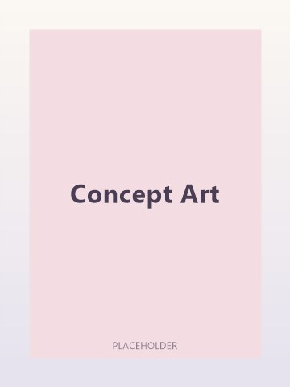

Art & Concept
Where it started. Illustration and character studies across traditional and digital media — the drawing practice that everything else on this site is built on, and the reason interface work here tends to start with a pencil before it starts with a grid.

About this work
Two sets of drawing work. The concept studies were made to hone specific skills rather than to be finished pieces — and some of them are inspired by existing works from other creators, either replicated outright or adjusted into my own style, as practice rather than original concepts.
The character set spans older physical mediums and more recent digital work. Early pieces made with traditional materials sit alongside newer digital ones, which is the clearest record of how the work has changed over time.
15 pieces
Concept Art
Fifteen studies across a deliberately wide range — animals, environments, faces, hands and objects. Studies rather than finished pieces: each one exists to solve a specific problem, and the range is the point. Some are inspired by existing works from other creators, replicated or adjusted into my own style, and are here as practice.
View all 15 →16 pieces
Character Design
Character work spanning older physical mediums and more recent digital pieces, kept as a pair of sets and shown together on purpose. The traditional coloured-pencil sheets sit at the end of the set; the digital work runs before them. Four portrait icons sit here too, drawn to read inside a circular frame at small size — the format where illustration and interface meet.
View all 16 →